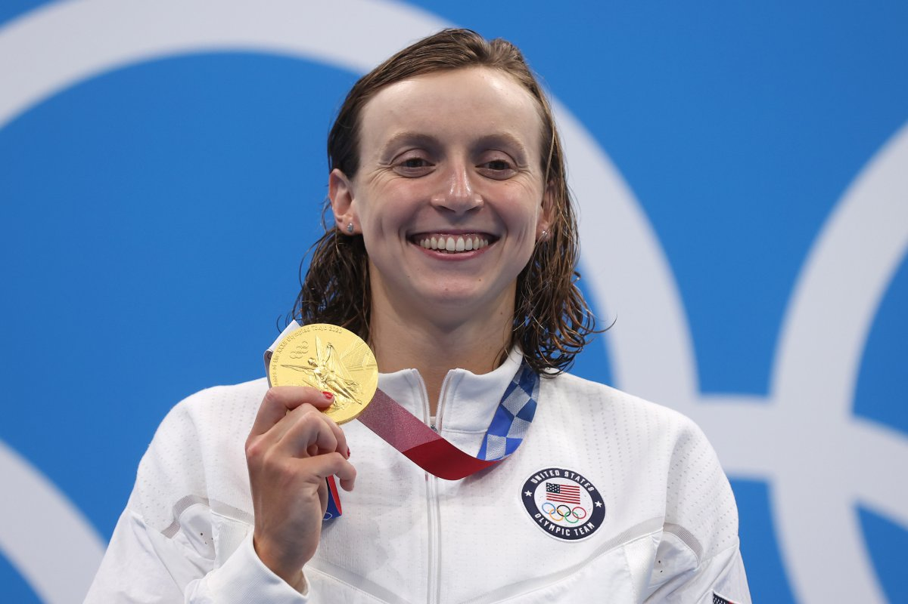

My Hobby
My favorite hobby is swimming. I really love to swim, especially in a pool and at the lake.
Apart from swimming myself, I love to watch the Olympics, as it inspires me to swim and improve my techniques and skills.
My favorite swimmer is Katie Ledecky, who is from the United States, has broken multiple records, and consistently breaks her own world records.
I learned to swim when I was eleven years old, and learned faster than I expected myself to (especially as I get scared very easily).
During the summer, I love to jump into the pool and enjoy the warm sun as soon as the weather gets really warm. I love to sit by the pool with my family and jump into the pool from the evening until the end of the night.